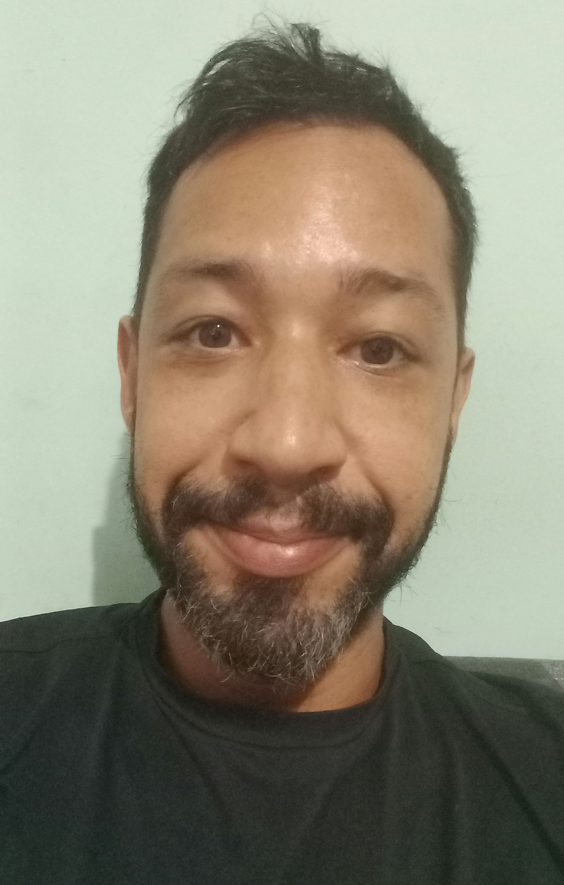

Pablo Tamborini Nogueira

Dados pessoais
- 44 anos, brasileiro
- Celular: (81) 98259-9198
- e-mail: ptn@cesar.school
Vida Acadêmica
- Licenciatura em Filosofia - UFAL (Universidade Federal de Alagoas)
Experiências Profissionais
- Aulas particulares de inglês - nível intermediário
- Professor de Inglês no ELC - Escola de Idiomas (Boa Viagem) (2014-2017)
- Professor de Inglês na Rede Estadual de São Paulo - Guarulhos (2013)
- Professor de Inglês no colégio e curso Imponente (Maceió) (ago 2009 a mar 2011)
Idiomas & cursos
- Graduação em Análise e Desenvolvimento de Sistemas (em andamento - 1o período)
- Inglês nível intermediário - Britanic English Center (Recife) - 4 anos
- Certificado Cambridge English TKT Module 1 - Band 3 (2014)
- Certificado Cambridge English TKT Module 2 - Band 3 (2014)
- Italiano nível intermediário - Centro Cultural Dante Alighieri (Recife)- 2,5 anos